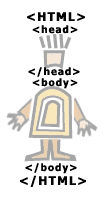

Учебник по Html для чайников. Простейшие.Ступенька 5-ая.На этой ступеньке мы узнаем, как изменять цвет фона документа, и поговорим немного об этике. Цвет фона устанавливается в уже знакомом нам тэге <body>: <body bgcolor="#000000"> Для наглядности я прописала черный цвет, вы же свой документ можете раскрасить любым другим. Кстати, если цвет в <body> не указывать, то по умолчанию он будет белым, хотя иногда цветом по умолчанию может являться любой другой, кроме белого, поэтому лучше всегда прописывайте цвет фона в body, а так же цвет основного текста (как его задавать вы уже знаете) и цвета ссылок (с ними мы познакомимся чуть позже).  <html> <head> <title>Мой первый шаг </title> </head> <body text="#336699" bgcolor="#000000"> Здравствуйте, это моя первая страница. <br> <font color="#CC0000"> Добро пожаловать!</font> :) </body> </html> (посмотреть) Обратите внимание: мы одновременно можем прописать в тэге <body> и цвет текста в документе, и цвет фона (это на всякий случай, если вы еще не поняли – одному тэгу может быть присвоено несколько атрибутов :). <body text="#336699" bgcolor="#000000"> С теоретической частью на данной ступеньке мы закончили, теперь присядем и немного поговорим о цветах. Нет, не о тех, которые растут в лесах, полях, оранжереях, а о цветах документа. Я хочу попросить вас, мой дорогой спутник, не злоупотреблять яркими фонами (желтым, красным, салатовым, ну, и черным с яркой смесью текста на нем). Почему? Да, просто пожалейте глаза ваших друзей, знакомых и случайного посетителя. Не следует также употреблять слишком много различных цветов на вашей страничке, это, как и яркий фон, отвлекает от содержания, мешает прочтению и выставляет вас самого не в лучшем свете. Пример: Девочка в ярко-розовых джинсах и противном салатовом топике с надписью Kiss me, безусловно, привлечет внимание, но надолго ли? Что вы о ней подумаете? Не уподобляйтесь такой не очень разумной девочке:). Кстати, о внимании, давайте переключим его на следующую главу моего повествования и шагнем на другую ступеньку.
<<< Ступенька 4-ая: Назад | Далее: Ступенька 6-ая >>>
|
|||||